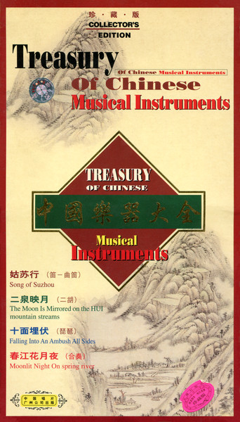

CD
中國樂器大全 = Treasury Of Chinese Musical Instruments
Various
Media: — · Sleeve: —
—
Personal
Discogs SuggestedCA$53.09
Discogs MedianCA$53.09
Discogs HighCA$53.09
- Physical Copy ID
- BB-CD-3294
- Year
- 1999
- Label
- CRC (8), CRC (8), CRC (8), CRC (8), 天地行, Jin Die
- Catalog #
- CCD89-33, CCD89-34, CCD89-35, CCD89-36, none, none
- Country
- CNChina
- Genre / Style
- Classical, Folk, World, & Country · Chinese Classical